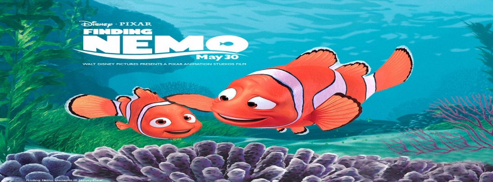

海底總動員(Finding Nemo)
2003年5月30日

【片長時間】 約１００分鐘
【作品類別】 迪士尼/皮克斯動畫，長篇劇情動畫片
【原著取材】 原創故事
【內容介紹】這是迪士尼公司以及皮克斯工作室第五部合作推出的作品，故事則是來到了繽紛多彩的海底世界，主角則是一對相依為命的小丑魚父子，有一天兒子 Nemo 被捉走帶到澳洲雪梨的一家牙醫診所當中，魚爸爸 Marlin 知道後心急如焚，為了找回他寶貝兒子，如今必須尋遍大海，跟上澳洲洋流才能帶回兒子，在途中他遇到形形色色的朋友，也遭遇各式各樣的危機，在健忘魚大姊 Dory 、熱心海龜群、鯨魚、鹈鵠鳥…等等的幫忙下，他到底能不能克服萬難找到兒子呢？
本片由 Andrew Stanton 擔任編劇和執導，過去皮克斯四部電腦動畫全都是他擔任編劇。【海底總動員】在美國一上映就票房亮麗，全美票房飆破三億美元大關，成為 皮克斯工作室當時最賣座的動畫電影，到了２０１２年又再度推出立體３Ｄ版重新在戲院上映。